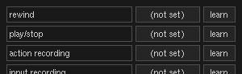

Giada can receive MIDI messages from the outside world. You can connect a physical device to control channels, volumes, properties, and more. In practice, any source capable of sending MIDI messages can be used to control Giada, including software and scripts.
There are two main classes of elements that can be controlled via MIDI:
First, make sure you have properly configured your sound card to receive MIDI messages. You can do this in the configuration panel. To configure global elements, open Edit -> Setup global MIDI input... and a new window will appear containing all assignable elements.

From left to right, the first box contains the name of the parameter. The button ("(not set)" in the picture) shows the hexadecimal value currently assigned to that parameter: right-click it to reset the assignment to none. Finally, the Learn button enables so-called MIDI learn: click it, then move a knob or press any key, and Giada will assign that message to the parameter you selected.
To configure per-channel elements, click a channel's button and select Setup MIDI input... from the pop-up menu. The window of assignable elements is similar to the previous one, but with different parameters.
By default, Giada accepts messages from any MIDI channel. In some cases, however, you may want it to respond only to messages coming from a specific MIDI channel, especially when working with multiple MIDI instruments. Select a different channel from the MIDI channel selector to make Giada process incoming MIDI messages only when they come from the selected channel.
You can also let velocity control the volume of sample channels by enabling the Velocity drives volume option. Giada will adjust the sample volume according to how forcefully the key on your MIDI device is pressed. This feature is available only for sample channels in one-shot mode.